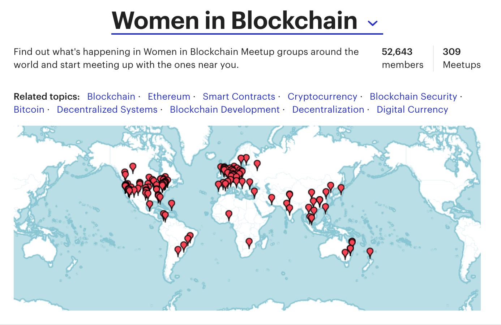

Ladies Explain...
the Blockchain!
sponsored by
Technology affects everyone
It should include everyone.
This was me until about 3 weeks ago
Women are getting involved
What we'll talk about tonight
- History of Blockchain: where did it come from?
- Basics of Blockchain: what is it?
- Applications: how is blockchain being used?
- Code: How does a blockchain work, exactly?
- Learn more!
History of Blockchain Technology
It's still early days for blockchain
Hamster Dance stage
Bitcoin

Digital cash is not a new idea
A Decentralized System

From a 1964 paper by Paul Baran for the Rand Corporation, "On Distributed Communications: Introduction to Distrubuted Communications Networks"
The Bitcoin Whitepaper
"Satoshi Nakamoto", October 31, 2008
The Genesis Block
Block 0
Mined on Jan 3, 2009

Bitcoin Pizza Day
The #Bitcoin pizza is worth $20,509,958 today. (-0.15% from yesterday) Today is Bitcoin pizza day!
— Bitcoin Pizza üçï (@bitcoin_pizza) May 22, 2017
Visit pizzaforcoins.com to find out what pizza joints near you will accept bitcoin!
Alternatively, read venture capital firm Ledra Capital's analysis of why that expensive pizza does not matter.
Altcoin
Volatility
Bitcoin reaches an all-time high price in April, 2013 and then crashes immediately afterwards.
source: coindesk.com
This year in Bitcoin
Blockchain 2.0
Smart contracts
Ethereum
Decentralized Applications
The Smart Economy
Blockchain 3.0
The Decentralized Web
Blockchain Explained
What is a Blockchain?
- A digital ledger of sequential transactions that is immutable.
- Each transaction is cryptographically signed.
- Many copies distributed throughout network -- no need for a central authority.
A Block is basically a chunk of data.
Blocks are 'chained' together because each block includes a reference to the block that came before it.
{kind=link}
Cryptographic Concepts
Hashing
Digital Signatures
Hashing

Cryptographic Hashing
- Very fast
- Irreversible
- No collisions
- Avalanche effect
Hashing Algorithms
- Publicly Available Tools
- MD5
- Secure Hash Algorithm (SHA)
- SHA-256
- Everyday Examples
- Passwords
- Emails
- Git
Questions?
Digital Signatures
Public Key: encrypts
Private Key: decrypts

SSL / TSL Protocols
- Websites
- Emails
- Web Applications
image or video
Components of a block
- The data: transactions / records / etc.
- Merkle tree: hash-based data structure
- Nonce: an arbitrary number
- Previous block's hash
- A new unique hash
Questions?
Peer to Peer Network
Distributed
Types of Blockchains
- Public Blockchain
- Private Blockchain
- Permissioned Blockchain
- Consortium Blockchain
Possibilites and Problems
Applications of blockchain technology
Real Estate
Large-scale Commerce
Education
Elections
"It is enough that the people know there was an election. The people who cast the votes decide nothing. The people who count the votes decide everything."
-- Joseph Stalin
Identity & Records
The days of fake ids are over!
Energy
Art
Advertising
The Basic Attention Token
Internet of Things
M2M transactions
Skeptical?
You are not alone.
Energy use is not sustainable
Bitcoin energy consumption data
Security issues
source: Kunal Nadwandi's blog
Digging Deeper
Ecosystem of a blockchain
Where to go from here
Women in Blockchain Meetup Group
Follow these women on Twitter
I wrote a post on how Ethereum works, explaining core components: State, accounts, transactions, blocks, gas, mining https://t.co/Imwue0IIto
— Preethi Kasireddy (@iam_preethi) September 27, 2017
- @iam_preethi
- @Melt_Dem
- @pamelawjd
- @ljxie
- @AriannaSimpson
- @Rachelwolf00
- @laurashin
- @wblockchain
- @BWarburg
Laura Shin's podcast
Unchained: Big Ideas From The Worlds Of Cryptocurrency and Blockchain